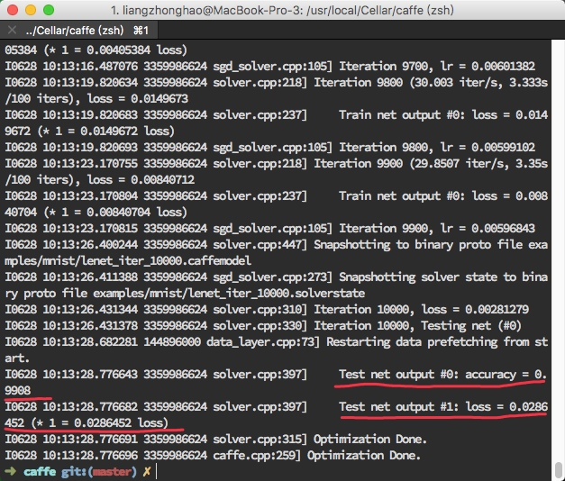

我们之前学习过,一个完整的深度学习系统最核心的两个方面是数据和模型。今大我们 主要关注模型。一个深度学习模型通常由三部分参数组成：
- 可学习参数（Leamable Parameter),又称可训练参数、神经网络权系数、权重，其数值由模型初始化参数、误差反向传播过程控制,一般不可人工干预.
- 结构参数（Archetecture Parameter),包括卷积层/全连接层/下采样层数目、卷积核数目、 卷积核大小等描述网络结构的参数,一旦设定好,在网络训练阶段不能更改;值得注意的是,训练阶段网络结构参数和预测阶段结构参数很可能不同。
- 训练超参数（Hyper-Parameter),用来控制网络训练收敛的参数，训练阶段可以自动或手动调节以获得更好的效果，预测阶段不需要该参数.
在Caffe中，一个模型的三部分参数分别由不同模块定义和实现:
- 可学习参数在内存中使用Blob对象保持，必要时以二进制ProtoBuffer文件(*.caffemodel)形态序列化并存储于磁盘上，便于进一步微调（finetune,又称精调）、共享（例如参数服务器Parameter Server, PS)、性能评估（benchmark)。
- 结构参数使用ProtoBuffer文本格式（*.prototxt)描述，网络初始化时通过该描述文件构建Net对象、Layer对象形成有向无环图结构，在Layer与Layer之间、Net输入源和输出阱均为持有数据和中间结果的Blob对象。
- 训练超参数同样使用ProtoBuffer文本格式（*.prototxt)描述，训练阶段利用该描述文件构建求解器（Solver)对象，该对象按照一定规则在训练网络时自动调节这些超参数值。
我们在MNIST例子中对LeNet-5模型稍微修改一下.变成逻辑回归（Logistic Regression, LR)分类器。

复制一份examples/mnist/lenet_train_test.prototxt,重命名为 lenet_lr.prototxt，修改内容如下:
name: "LeNet"
layer {
name: "mnist"
type: "Data"
top: "data"
top: "label"
include {
phase: TRAIN
}
transform_param {
scale: 0.00390625
}
data_param {
source: "examples/mnist/mnist_train_lmdb"
batch_size: 64
backend: LMDB
}
}
layer {
name: "mnist"
type: "Data"
top: "data"
top: "label"
include {
phase: TEST
}
transform_param {
scale: 0.00390625
}
data_param {
source: "examples/mnist/mnist_test_lmdb"
batch_size: 100
backend: LMDB
}
}
layer {
name: "ip"
type: "InnerProduct"
bottom: "data"
top: "ip"
param {
lr_mult: 1
}
param {
lr_mult: 2
}
inner_product_param {
num_output: 20
weight_filler {
type: "xavier"
}
bias_filler {
type: "constant"
}
}
}
layer {
name: "accuracy"
type: "Accuracy"
bottom: "ip"
bottom: "label"
top: "accuracy"
include {
phase:TEST
}
}
layer {
name: "loss"
type: "SoftmaxWithLoss"
bottom: "ip"
bottom: "label"
top: "loss"
}
复制一份examples/mnist/lenet_solver.prototxt，重命名为lenet_lr_solver.prototxt,修改内容
如下:
# The train/test net protocol buffer definition
net: "examples/mnist/lenet_lr.prototxt"
# test_iter specifies how many forward passes the test should carry out.
# In the case of MNIST, we have test batch size 100 and 100 test iterations,
# covering the full 10,000 testing images.
test_iter: 100
# Carry out testing every 500 training iterations.
test_interval: 500
# The base learning rate, momentum and the weight decay of the network.
base_lr: 0.01
momentum: 0.9
weight_decay: 0.0005
# The learning rate policy
lr_policy: "inv"
gamma: 0.0001
power: 0.75
# Display every 100 iterations
display: 100
# The maximum number of iterations
max_iter: 10000
# snapshot intermediate results
snapshot: 5000
snapshot_prefix: "examples/mnist/lenet"
# solver mode: CPU or GPU
solver_mode: CPU
然后运行训练命令,在命令行输入:
./build/tools/caffe train --solver=examples/mnist/lenet_lr_solver.prototxt
但是发现报错了:

通过上述错误描述,发现是lmdb数据文件没有的问题....
运行./examples/mnist/create_mnist.sh脚本,将之前下载过的数据转化成lmdb形式.中间的报错和解决如截图所示:

我们成功获得到了lmdb文件.
再次执行训练命令:
master) ✗ ./build/tools/caffe train --solver=examples/mnist/lenet_lr_solver.prototxt
然后就发现已经开始训练了.
最后得到结果如图所示:

经过训练，可以获得在测试集上分类准确率为0.9908的模型。相比LeNet-5而言准确率降低了，这也符合直觉，因为将模型简化后参数变少，层数变少，网络表达能力变差。我们今天不关注准确率，只关注模型的表达方式。